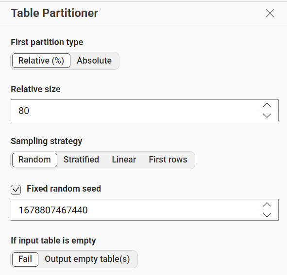
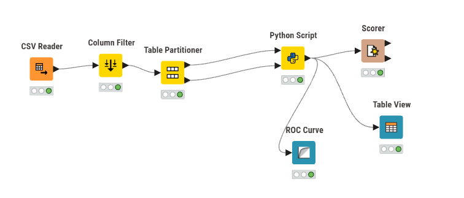
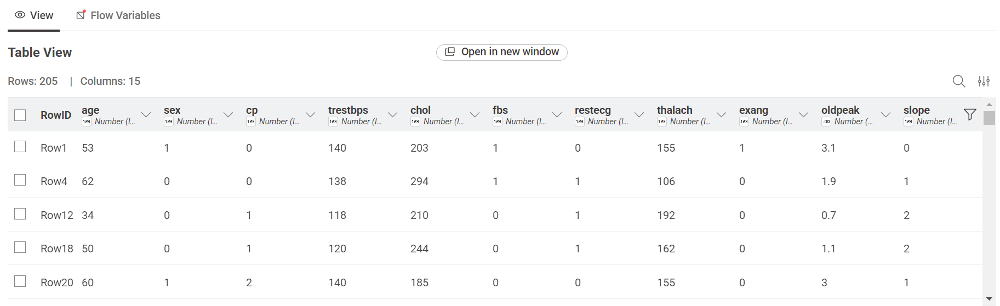
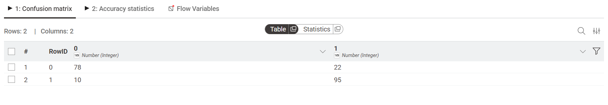
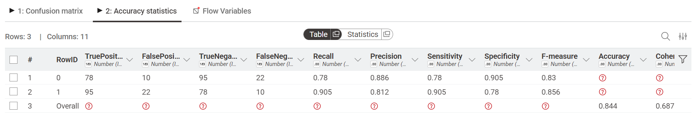
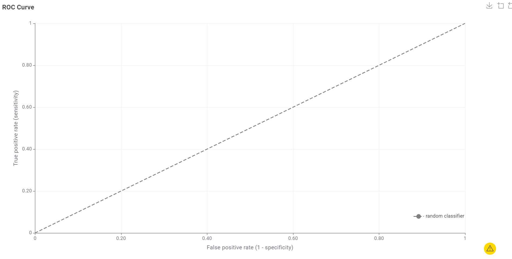

Analisis Data Naive Bayes#
1. Eksplorasi Dataset#
Deskripsi Dataset :
Tahap awal dari proyek ini adalah memahami data yang akan kita olah. Kami menggunakan Heart Disease Dataset, sebuah dataset medis yang berisi informasi klinis pasien untuk menentukan apakah mereka memiliki risiko penyakit jantung. Dataset ini lebih kompleks daripada dataset klasifikasi dasar karena melibatkan parameter biologis manusia yang dinamis.
Sumber Data: Heart Disease Dataset - Kaggle
link data : https://www.kaggle.com/datasets/johnsmith88/heart-disease-dataset
Penelitian ini menggunakan Heart Disease Dataset dari Kaggle untuk memprediksi risiko penyakit jantung berdasarkan data medis pasien. Dataset ini terdiri dari 1.025 data pasien dengan 13 fitur dan 1 target class.
Dataset ini termasuk data medis yang kompleks karena memiliki kombinasi fitur numerik dan kategorikal.
Informasi Dataset :
Informasi |
Keterangan |
|---|---|
Jumlah Data |
1.025 baris |
Jumlah Atribut |
14 kolom (13 fitur + 1 target) |
Target |
0 = Sehat, 1 = Penyakit Jantung |
Atribut yang Digunakan :
No |
Nama Kolom |
Deskripsi |
Tipe Data |
Peran |
|---|---|---|---|---|
1 |
age |
Usia pasien |
Numerik |
Fitur |
2 |
sex |
Jenis kelamin (1=L, 0=P) |
Kategorikal |
Fitur |
3 |
cp |
Tipe nyeri dada |
Kategorikal |
Fitur |
4 |
trestbps |
Tekanan darah istirahat |
Numerik |
Fitur |
5 |
chol |
Kolesterol serum |
Numerik |
Fitur |
6 |
thalach |
Detak jantung maksimal |
Numerik |
Fitur |
7 |
oldpeak |
Depresi ST |
Numerik |
Fitur |
8 |
target |
Diagnosa penyakit |
Kategorikal |
Target |
2. Preprocessing Data#
Standardisasi Data (Z-Score) Tahap preprocessing dilakukan untuk menyamakan skala antar fitur agar model tidak bias terhadap fitur dengan nilai besar seperti kolesterol.
Mengapa perlu normalisasi ?
Karena setiap fitur memiliki rentang nilai berbeda :
Kolesterol: ratusan
Usia: puluhan
Oldpeak: kecil
Tanpa normalisasi, model akan lebih fokus ke fitur bernilai besar dan hasil prediksi menjadi tidak akurat.
Metode yang digunakan
Z-Score Standardization :
Mengubah data menjadi distribusi dengan mean = 0 dan standar deviasi = 1
Cocok untuk algoritma probabilistik seperti Naive Bayes
Partisi Data (80:20)
Data dibagi menjadi :
80% Training (820 data) → Melatih model
20% Testing (205 data) → Menguji model

Partitioning node KNIME (setting 80%)
3. Implementasi Model (KNIME + Python)#
Tools yang digunakan :
KNIME Analytics Platform
Python Script (Scikit-Learn)
Gaussian Naive Bayes
Workflow KNIME#

Ekstensi yang Digunakan pada Workflow KNIME :
CSV Reader: Digunakan untuk membaca dataset penyakit jantung dari file CSV sebagai sumber data awal dalam workflow.
Column Filter: Berfungsi untuk memilih atribut yang relevan dan menghapus kolom yang tidak diperlukan agar analisis lebih fokus.
Table Partitioner: Membagi dataset menjadi data training (80%) dan data testing (20%) untuk proses pelatihan dan pengujian model.
Python Script: Menjalankan proses utama seperti normalisasi data menggunakan StandardScaler, pelatihan model Gaussian Naive Bayes, serta prediksi data testing.
Scorer: Digunakan untuk mengevaluasi performa model dengan menghasilkan metrik seperti akurasi dan confusion matrix.
ROC Curve: Menampilkan kurva ROC untuk mengukur kemampuan model dalam membedakan kelas positif dan negatif.
Table View: Menyajikan hasil prediksi dalam bentuk tabel untuk memudahkan analisis dan perbandingan dengan data asli.
Implementasi Gaussian Naive Bayes melalui Python Scripting#
Meskipun KNIME menyediakan node Naive Bayes bawaan, proyek ini memilih menggunakan Python Scripting dengan library scikit-learn. Hal ini dilakukan untuk mendapatkan kontrol penuh atas proses normalisasi dan parameter model.
Kami memilih varian Gaussian Naive Bayes karena sebagian besar fitur medis kami berbentuk angka kontinu. Algoritma ini bekerja dengan asumsi bahwa fitur-fitur tersebut terdistribusi secara normal (mengikuti kurva lonceng). Model akan menghitung probabilitas pasien masuk ke kategori “Sakit” atau “Sehat” berdasarkan sebaran data tersebut.
Script Pyhton yang digunakan :
import pandas as pd
from sklearn.naive_bayes import GaussianNB
from sklearn.preprocessing import StandardScaler
from sklearn.model_selection import train_test_split
# 1. Load Data
df = pd.read_csv('heart.csv')
# 2. Pisahkan Fitur dan Target
# Di filemu, kolom terakhir sudah bernama 'target'
X = df.drop(columns=['target'])
y = df['target']
# 3. Bagi data (80% Training, 20% Testing)
X_train, X_test, y_train, y_test = train_test_split(X, y, test_size=0.2, random_state=42)
# 4. Normalisasi
scaler = StandardScaler()
X_train = scaler.fit_transform(X_train)
X_test = scaler.transform(X_test)
# 5. Training Model
model = GaussianNB()
model.fit(X_train, y_train)
# 6. Prediksi
y_pred = model.predict(X_test)
# 7. Tampilkan hasil 5 baris pertama
df_hasil = pd.DataFrame(X_test, columns=X.columns)
df_hasil['Asli'] = y_test.values
df_hasil['Prediksi'] = y_pred
df_hasil.head()
| age | sex | cp | trestbps | chol | fbs | restecg | thalach | exang | oldpeak | slope | ca | thal | Asli | Prediksi | |
|---|---|---|---|---|---|---|---|---|---|---|---|---|---|---|---|
| 0 | 0.833168 | -1.527525 | -0.916720 | -0.438694 | -0.726282 | -0.414039 | 0.909846 | 0.595660 | -0.725949 | -0.912152 | 1.005264 | -0.725467 | -0.545193 | 1 | 1 |
| 1 | -0.149222 | -1.527525 | 1.008275 | -0.211520 | -0.585261 | -0.414039 | -0.983742 | -1.499156 | -0.725949 | -0.912152 | 1.005264 | -0.725467 | -3.856737 | 1 | 1 |
| 2 | 0.069087 | 0.654654 | -0.916720 | 1.605866 | 0.885384 | -0.414039 | -0.983742 | -0.189896 | 1.377507 | -0.210661 | -0.640079 | 0.240252 | 1.110579 | 0 | 0 |
| 3 | -0.476686 | -1.527525 | 0.045777 | -0.665867 | -0.021178 | -0.414039 | 0.909846 | 0.552018 | -0.725949 | 0.052398 | 1.005264 | -0.725467 | -0.545193 | 1 | 1 |
| 4 | -0.694995 | 0.654654 | -0.916720 | -0.097934 | 0.220572 | 2.415229 | -0.983742 | 0.028314 | 1.377507 | -0.912152 | 1.005264 | 1.205972 | 1.110579 | 0 | 0 |
4. Hasil dan Evaluasi Model#
Hasil Prediksi :
Model digunakan untuk memprediksi apakah pasien memiliki penyakit jantung atau tidak berdasarkan data testing.

Confusion Matrix#
Confusion Matrix digunakan untuk melihat performa model dalam klasifikasi.

Hasil:
True Positive (TP): 95
True Negative (TN): 78
Evaluasi Model#
Setelah model selesai menebak, kita perlu cek seberapa hebat kinerjanya. Bagian ini menunjukkan bukti statistik apakah model kita bisa dipercaya atau tidak.
Statistik Akurasi Tabel ini menunjukkan ringkasan keberhasilan model dalam memprediksi data.

Model berhasil mendapatkan akurasi 83.9%. Artinya, dari 205 pasien yang diuji, sekitar 172 orang berhasil ditebak kondisinya dengan benar. Nilai ini sudah sangat bagus untuk sebuah deteksi awal kesehatan.
ROC Curve Grafik ini menunjukkan kemampuan model dalam membedakan mana orang yang benar-benar sakit dan mana yang sehat.

Semakin melengkung garis birunya ke arah kiri atas, berarti model semakin jago membedakan kelas pasien. Grafik di atas membuktikan model kita punya performa yang stabil dan kuat.
Hasil Evaluasi:
Akurasi (Overall Accuracy) : 0.83902… → dibulatkan jadi 83.9%
F1-Score (F-Measure): 0.8444… → dibulatkan jadi 0.844
Kesimpulan#
Model Gaussian Naive Bayes berhasil memberikan hasil yang cukup baik dalam klasifikasi penyakit jantung. Dengan tingkat akurasi yang stabil, model ini sangat layak digunakan sebagai instrumen skrining atau alat bantu diagnosa awal dalam bidang medis.
Data Training: 820 pasien (80%)
Data Testing: 205 pasien (20%)
Akurasi Model: 83.9% (Berdasarkan evaluasi Scorer)
F1-Score: 0.844 (Menunjukkan performa prediksi yang kuat)
Hasil Diagnosa (Confusion Matrix):
True Positive (TP): 95 pasien sakit berhasil diprediksi dengan benar.
True Negative (TN): 78 pasien sehat berhasil diprediksi dengan benar.